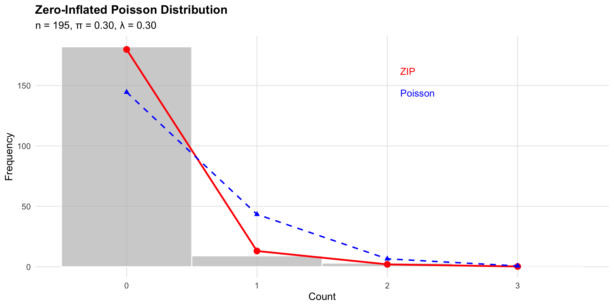

Zero Inflation, Panels, and Multilevel Models
2026-08-18
Introduction
- The Poisson Regression Model (PRM)
- A strong assumption: \(E(\mu)=var(y)\)
- Overdispersion
- The negative binomial
- Zero counts
- Truncated regression
- Zero inflation and hurdle models
Introduction
Truncation means data that fall above (or below) are at some particular value(s) are ignored, they are missing
E.g., The impact of ideology on dollars spent during an election cycle, among general election candidates
Truncation at zero, for instance
Censoring means data that fall above (or below) are at some particular value(s) are scored at a threshold value
The standard approach of estimating a PRM or ZINB regression is incorrect
For truncation, the wrong PDF is used
For censoring, the expected value is biased
For instance
- A zero count. The probability of a zero count under the PRM is not zero if \(x\) has an effect on \(y\), \[p(y_i=0|x_i)=exp(-\mu_i)\]
- A nonzero count, \[p(y_i>0|x_i)=1-exp(-\mu_i)\].
- And, a Poisson distribution where \(p(y |y > 0)\) \[p(y|x)={{exp(-\mu_i)\mu_i^{y_i}}\over{y_i!}(1-exp(-\mu_i))}\]
When Zeroes are Observed
- Imagine you are completing a project on casualties in military conflict
- Your data is panel data, which includes a large sample of countries over a many years
- You have a dataset with a lot of zeros
- What is a zero and why do we observe it?
When Zeros are Observed
- Imagine you are completing a project on casualties in military conflict
- Your data is panel data, which includes a large sample of countries over a many years
- You have a dataset with a lot of zeros
- What is a zero and why do we observe it?
- Superior defenses, nature of war, no boots on the ground, and/or no conflict
Mixed Processes

\[ Pr(y = 0 |p, \lambda) = Pr(\text{Not at War}) + \\Pr(\text{At War}) \times Pr(y = 0 | \lambda) \]
- The probability of observing zero casualties is a function of two processes:
- The probability of not being at war (structural zero)
- The probability of being at war and observing zero casualties (sampling zero)
Zero Generating
- Imagine a two-stage process, a zero-stage and a count-stage. This allows us to model excess zeros, in that we can consider the probability of a count, weighted by the likelihood of being in the count stage. It’s useful to think of this as a hurdle process
Zero stage
- \(\theta_i\) the probability that \(y=0\) and \(1-\theta_i\) is the probability that \(y>0\)
- Model 0/1 using a logit or probit regression \[\theta_i=F(z_i\gamma)\]
Count Generating
Count Stage
\[pr(y_i=0|x_i)=\theta_i+(1-\theta_i)exp(\mu_i)\]
Note
The zero count is a composite of \(\theta_i\), from zero process (e.g., lack of conflict), as well as the count process itself, \[(1-\theta_i)exp(\mu_i)\]
Non zero values are,
\[pr(y_i|x_i)=(1-\theta_i){{exp(\mu_i)\mu_i^{y_i}}\over{y_i!}}\]
Dual Processes
- The count process weighted by the probability of a non-zero. \[ L(\pi, \mu \mid y) = \prod_{i=1}^{n} \left[ \theta_i \mathbb{I}(y_i = 0) + (1 - \theta_i) {{exp(-\mu_i)\mu_i^{y_i}}\over{y_i!}} \right] \]
- \(\theta_i\) is the probability of a zero for the ith observation.
- \(\mathbb{I}(y_i = 0)\) is called indicator function; it’s just a binary indicator that equals 1 when \(y_i = 0\), and 0 otherwise
- So, when \(y_i = 0\), the contribution to the likelihood is \(\theta_i + (1-\theta_i)pr(\text{Poisson}=0)\)
- But when \(y_i > 0\) the contribution to the likelihood is \((1-\theta_i)pr(\text{Poisson}=y_i)\)
\[\log L(\pi, \mu \mid y) = \sum_{i=1}^{n} \log \left[ \theta_i \mathbb{I}(y_i = 0) + (1 - \theta_i) {{exp(-\mu_i)\mu_i^{y_i}}\over{y_i!}} \right]\]
- The (log) likelihood is a mixture of the zero process and the count process.
The Hurdle Model
The zero attenuated regression model
Predict a zero count
\[\theta_i=F(z_i\gamma)\]
Model the non zero equation with a truncated poisson (or negative binomial)
\[pr(y_i|x_i)=(1-\theta_i){{exp(\mu_i)\mu_i^{y_i}}\over{y_i!}(1-exp(\mu_i))}\]
Zero Inflation

Zero Counts
- Zero counts are common in count data
- They may arise from a poisson or negative binomial process
- Or they may be observed for entirely separate reasons
- Theory should guide the decision to model zero counts
Multilevel Structures and the Panel Design
Panel data are common in political science
Unlike cross sectional data, units are repeatedly observed
Some designs are “cross sectionally” dominant, others are “time series” dominant
The Time-Series Cross-Section (TSCS) design
\[y_{it}=\beta_0+\beta_1 x_{it}+e_{it}\]
Fixed Effects
\[ y_{it}=\beta_0+\beta_1 x_{it}+e_{it}\]
\(y\) is the observation for the ith unit at time t
If there is a lot of variation across units, we should account for this variation.
Fixed Effects
- The intercepts vary across units (e.g, countries, states, individuals)
\[ y_{it}=\beta_0+\beta_1 x_{it}+\sum_t^{N-1} \gamma_{i} d_{i}+ e_{it}\]
\(d_i\) denotes a dummy variable for the “unit”
This is the fixed effects estimator, and it captures the extent to which heterogeneity in the “units” – the \(i\) intercepts – influence \(y\) alongside \(x\)
The fixed effects estimator is also called the least squares dummy variable (LSDV) estimator (Hsiao 2022), and the within effects estimator
An equivalent approach is to remove the unit means from \(y\)
\[ y_{it} - \bar{y_i}=\beta_{0}+\beta_1 x_{it}+ e_{it}\]
Fixed Effects and Lags
The panel data is often leveraged to examine over time changes, i.e., autoregressive effects.
This model includes lagged dependent variables as predictors
If there is substantial heterogeneity across units, we should account for this variation.
Ignoring it will bias parameter estimates
What are “unit effects”? They are just the unit means averaged over time (e.g., country means)
Important Note: The fixed effects estimator does not account for time varying unobserved heterogeneity. It only accounts for time invariant unobserved heterogeneity
Another Important Note: The fixed effects estimator with a lagged dependent variable – the dynamic panel design – produces biased estimates of the lagged dependent variable coefficient (Nickell 1981). The bias decreases as \(T\) increases.
Random Effects
An alternative to the fixed effects estimator is the random effects estimator
In the random effects model, the intercepts are drawn from a probability density, rather than estimating \(J-1\) dummy variables (i.e, unit averages)
The nested logic is the same; the unit of observation is the ith observation nested within the jth higher level unit (e.g, country-time nested in countries)
The Random Intercept Model
Level 1 (within-group): \[ y_{it} = \beta_{0i} + \beta_1 x_{it} + \epsilon_{it} \] Level 2 (between-group): \[ \beta_{0i} = \gamma_{0} + u_{0i} \] where:
\[ \begin{align} \epsilon_{it} &\sim N(0, \sigma^2_1) \\ u_{0i} &\sim N(0, \sigma^2_{2}) \end{align} \]
Reduced form: \[ y_{it} = \gamma_{0} + \beta_1 x_{it} + (u_{0i} + \epsilon_{it}) \quad \text{(composite error)} \]
The Random Intercept Model
The random intercept model captures variation at two levels: within groups (level 1) and between groups (level 2)
It’s an Analysis of Variance (ANOVA), partitioning between unit and within unit variation
The intraclass correlation coefficient (ICC) measures the proportion of variance at the group level
The Random Intercept Model
\[ y_{it} = \gamma_{0} + \beta_1 x_{it} + (u_{0t} + \epsilon_{it}) \quad \text{(composite error)} \]
Variance components:
\[ \begin{aligned} u_{0t} &\sim N(0, \tau_{0}) \quad \text{(between-group variance)} \\ \epsilon_{it} &\sim N(0, \sigma^2) \quad \text{(within-group variance)} \end{aligned} \]
Total variance: \[ \text{Var}(y_{it}) = \sigma^2 + \tau_{0} = var(\text{Within}) + var(\text{Between}) \]
Intraclass correlation:
\[ \rho = \frac{\tau_{0}}{\tau_{0} + \sigma^2} \]
Adding Predictors
- Predictors can be added at both levels of the model
- Differentiate time variant (\(x_{it}\)) and time invariant (\(x_{t}\)) predictors
\[\begin{eqnarray} y_{it}=b_{0,i}+b_{1} x_{it}+e_{1,it}\\ b_{0,i}=\omega_0+\omega_1 z_{i}+e_{2,i}\\ e_{1,i} \sim N(0, \sigma_1^2)\\ e_{2,it} \sim N(0, \sigma_2^2) \end{eqnarray}\]
- \(x_{it}\) consist of variables that vary between units and waves; \(x_{i}\) consists of variables that only vary between units
Adding Random Coefficients
- Predictors can be added at both levels of the model
- Differentiate time variant (\(x_{it}\)) and time invariant (\(x_{t}\)) predictors**
\[\begin{eqnarray} y_{it}=b_{0,i}+b_{1,i} x_{it}+e_{1,it}\\ b_{0,i}=\omega_0+\omega_1 x_{i}+e_{2,i}\\ b_{1,i}=\omega_0+\omega_1 x_{i}+e_{3,i}\\ e_{1,it} \sim N(0, \sigma_1^2)\\ e_{2,i} \sim N(0, \sigma_2^2)\\ e_{3,i} \sim N(0, \sigma_3^2) \end{eqnarray}\]
- \(x_{it}\) consist of variables that vary between units and waves; \(x_{i}\) consists of variables that only vary between units
Adding Random Coefficients
Variance components:
\[ \begin{aligned} e_{1,it} &\sim N(0, \sigma_1^2) \quad \text{(level-1 residual variance)} \\ e_{2,i} &\sim N(0, \sigma_2^2) \quad \text{(random intercept variance)} \\ e_{3,i} &\sim N(0, \sigma_3^2) \quad \text{(random slope variance)} \end{aligned} \]
Pooling: A Continuum
- Let’s situate the random intercepts/coefficients in a broader structure. \(i\) indexes observation within \(j\) clusters.
- No pooling model. This is the fixed effects model above, in which each level-2 unit has a unique mean value.
- Complete pooling. This is the regression model with no level 2 estimated means. Instead, we assume the level-2 units completely pool around a common intercept (and perhaps slope).
\[y_{j,i}=\beta_0+\sum_j^{J-1} \gamma_{j} d_j+ e_{j,i}\text{ No Pooling}\]
\[y_{j,i}=\beta_0+ e_{j,i}\text{ Complete Pooling}\]
\[ \begin{eqnarray} y_{ij}=b_{0,j}+e_{1,ij}\text{ Partial Pooling}\\ \end{eqnarray} \]
Partial Pooling
\[\begin{eqnarray} b_{0,j}={{y_j\times n_j/\sigma^2_y+y_{all}\times 1/\sigma^2_{b_0}}\over{n_j/\sigma^2_y+ 1/\sigma^2_{b_0}}}\end{eqnarray}\]
\(y_j\) = Observed mean for group \(j\)
\(n_j\) = Sample size in group \(j\)
\(y_{all}\) = Overall mean across all groups, Grand Mean
\(\sigma^2_y\) = Within group variance
\(\sigma^2_{b_0}\) = Between group variance
The first part of the numerator represents the movement away from a common mean. Note that as \(n_j\) increases (the group size), the estimate is pulled further from the common mean (which of course is what’s on the right in the numerator)
As \(n_j\) increases, the estimate of the estimated mean is influenced more by the group than a common mean
As \(n_j\) decreases – so small groups – the formula now allows for a stronger likelihood that the estimates pools around a single value
The Intra-class correlation (ICC)
\[ICC=\sigma^2_{b_0}/[\sigma^2_{b_0}+\sigma^2_{y}]\]
Recall,
\[\sigma^2_{all}=\sigma^2_{b_0}+\sigma^2_{y}\]
- Thus, the estimate is an estimate of how much of the total variation in \(y\) is a function of variation between level-2 units, relative to within level-1 units
Practical Advice
The ICC should decrease as you include level-2 predictors; compare to a model without predictors
Interpretation of the level-2 expected values (i.e., the group means) is based on a compromise between the pooled and no pooling models
If we estimate a regression model with a dummy for every level-2 unit and predictors, the model is not identified because the variables will be collinear (Gelman and Hill 2009, 269)
Roadmap
- Zero Inflation, Panels, and Multilevel Models
- Missing Data, Censoring and Truncation
- Advanced Topics and Extensions, Lab
- Lab, Review, and Next Steps